106 Temaki Society
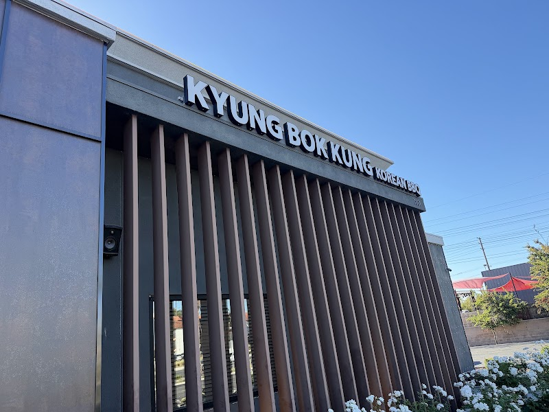
107 KyungBokKung
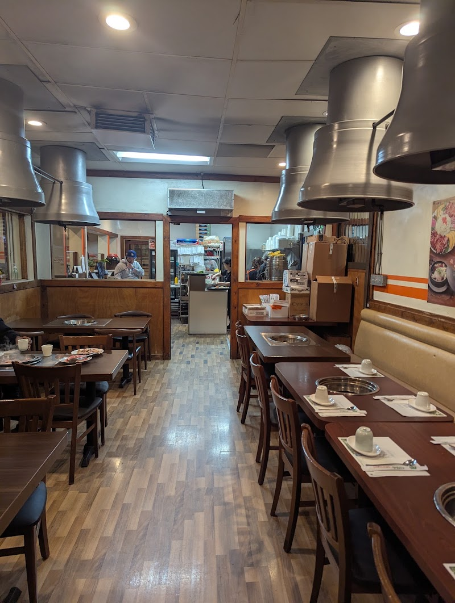
108 Dha Rae Ok
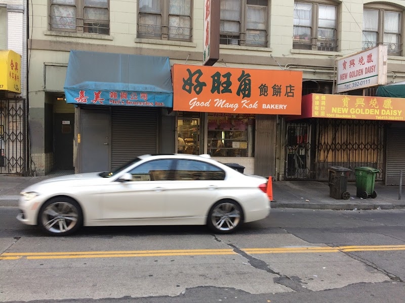
109 Good Mong Kok Ba
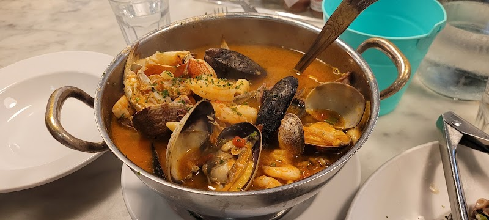
110 Sotto Mare
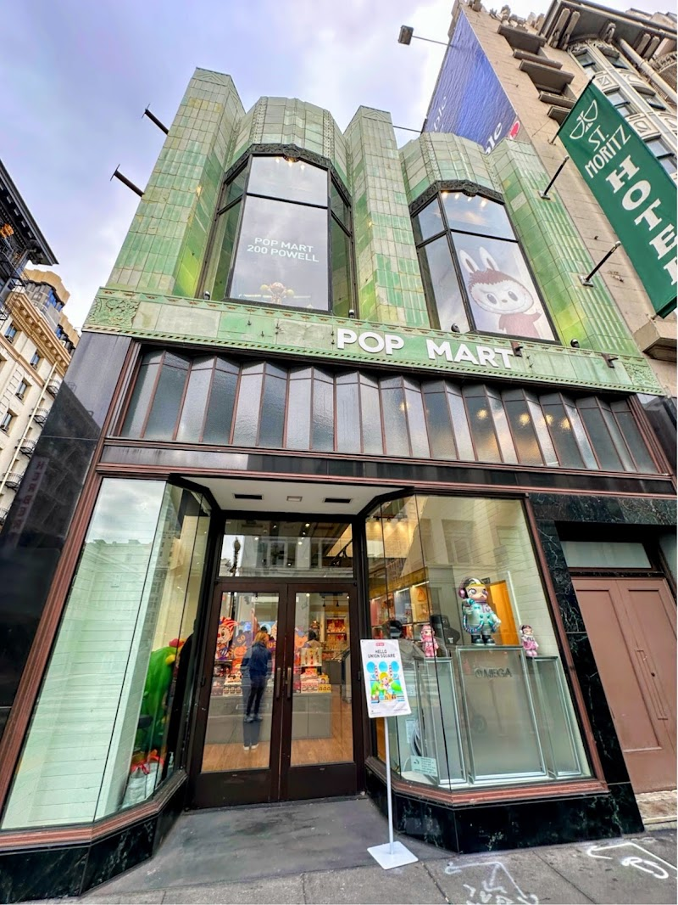
111 Pop Mart
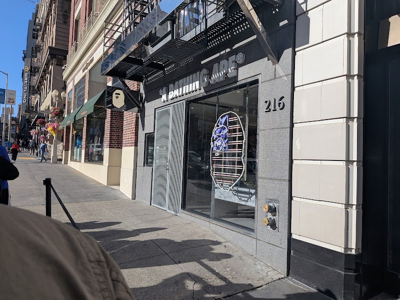
112 A Bathing Ape
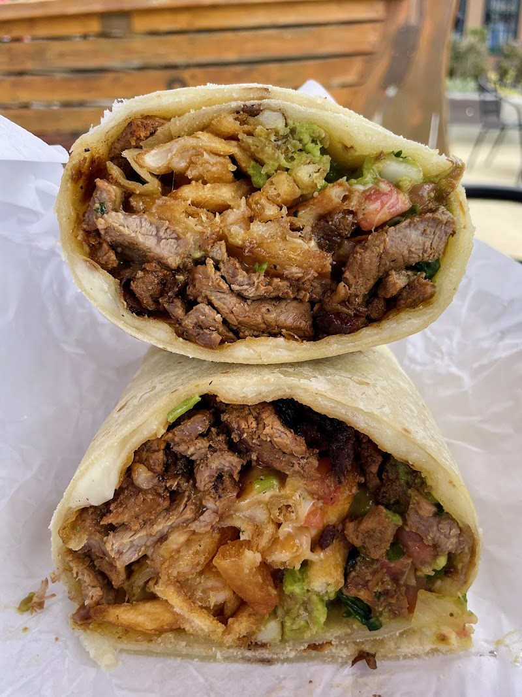
113 La Perla Cocina
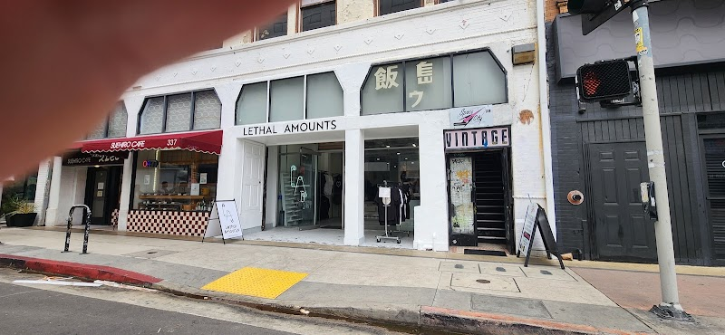
114 Space City Vinta
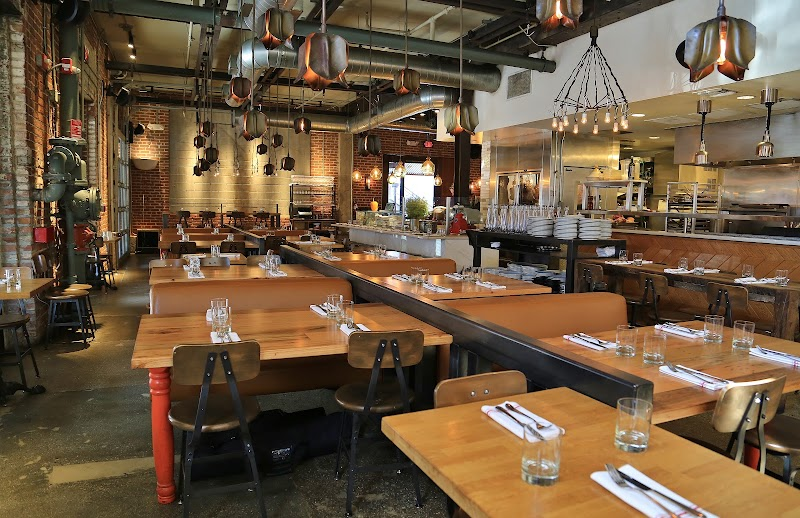
115 Bestia

116 Shin-Sen-Gumi
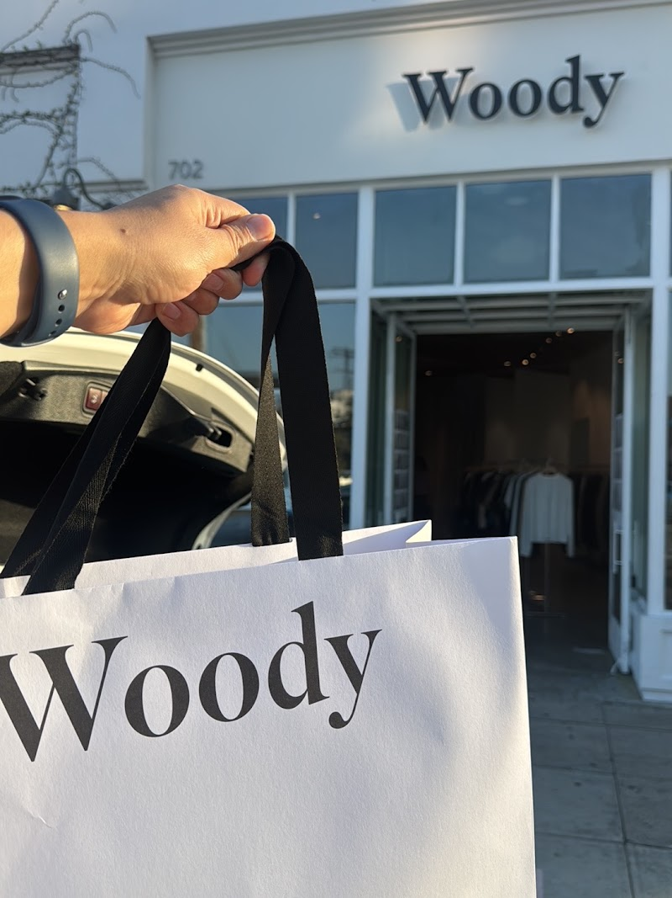
117 Woody
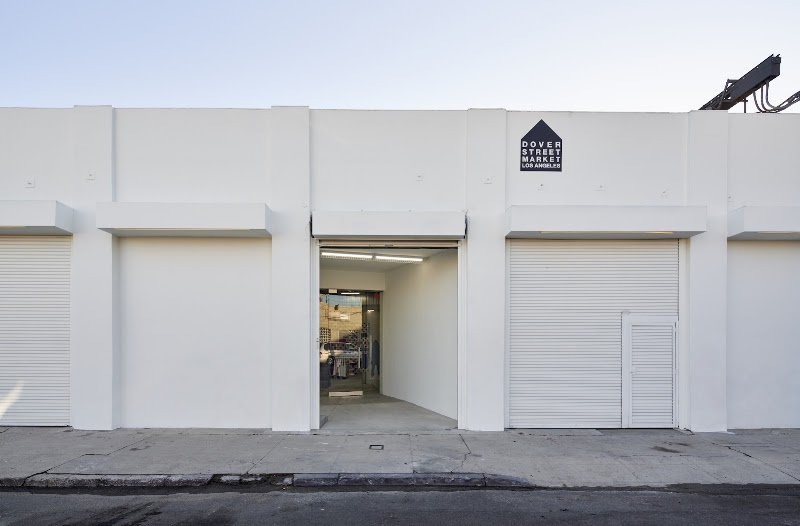
118 Dover Street Mar
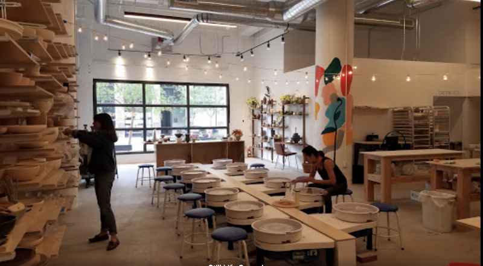
119 Still Life Studi
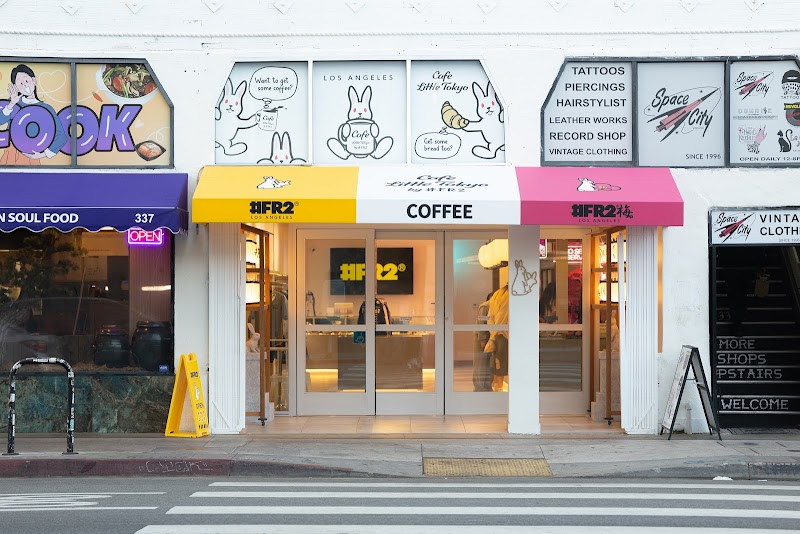
120 Cafe Little Toky

121 Okayama Kobo
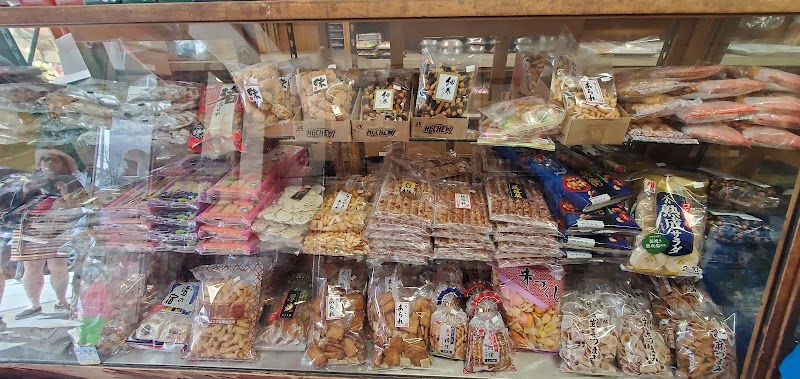
122 Fugetsu-Do
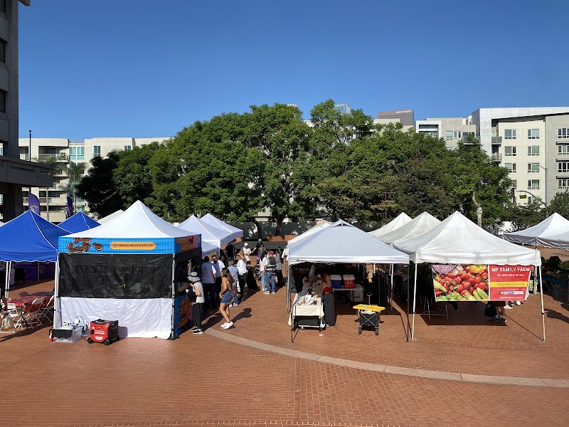
123 Little Tokyo Far
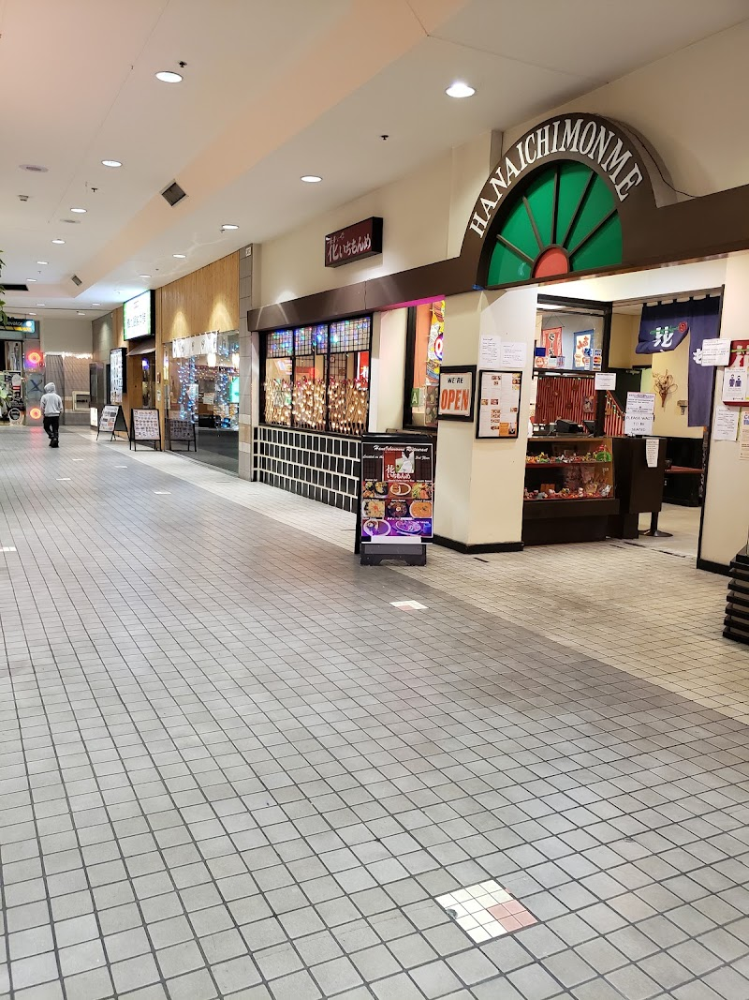
124 Little Tokyo Gal
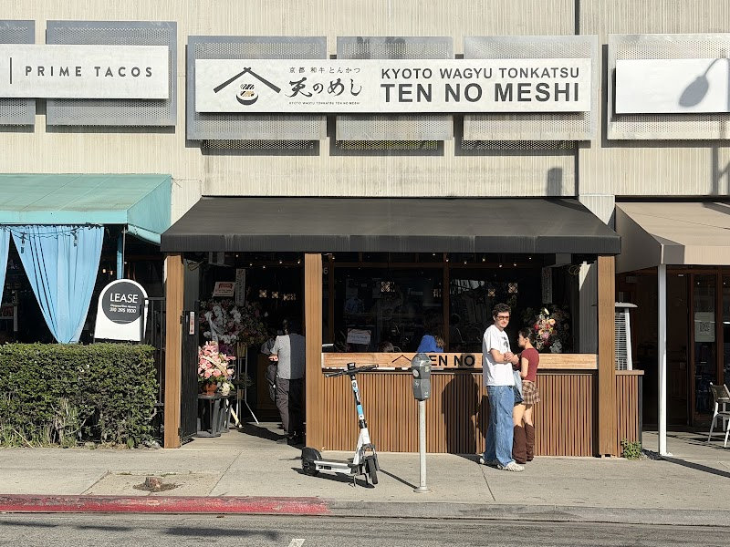
125 Ten no Meshi

126 Liu's Cafe